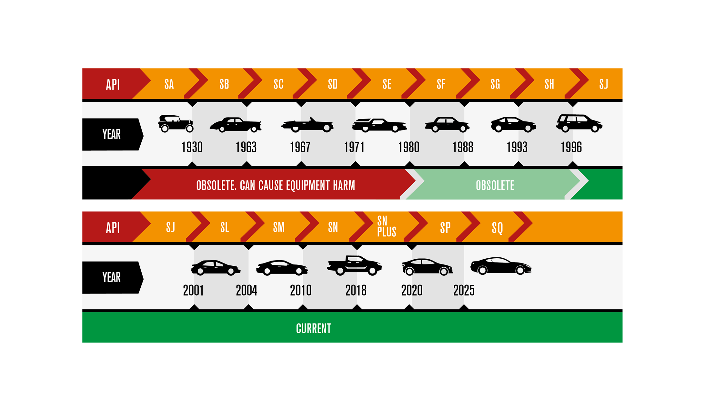
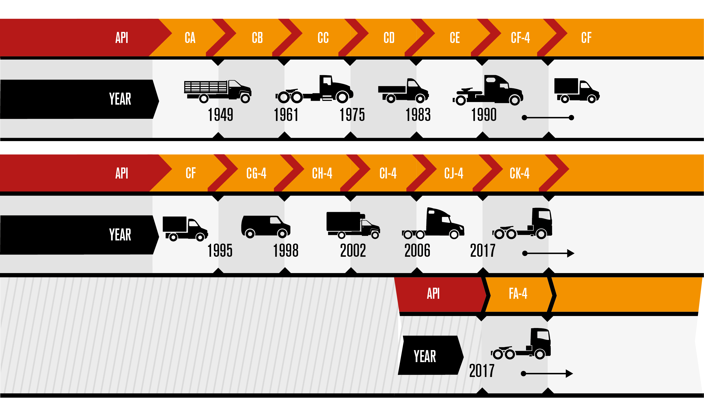

American Petroleum Institute
The US standards body that defines what an oil must do — wear protection, thermal stability, deposit control, fuel economy. If an oil claims an API spec, it has been tested against that spec.
The American Petroleum Institute (API) sets the standard for engine oil performance. This guide breaks down the codes you'll see on a UEL technical data sheet — in plain words, without the chemistry lecture.
API has been writing rules for engine oil since the 1920s. Every modern motor oil — petrol or diesel — is graded against an API service category, and that category is just two letters and a number.
The US standards body that defines what an oil must do — wear protection, thermal stability, deposit control, fuel economy. If an oil claims an API spec, it has been tested against that spec.
Cars, motorcycles and light commercial vehicles running on petrol (gasoline). Codes run SA, SB, SC ... up to today's SQ. The further down the alphabet, the newer the formulation.
Trucks, buses, generators and heavy machinery. Codes run CA → CK-4, with a parallel category FA-4 introduced for low-viscosity, fuel-economy diesel oils.
Each new S category replaces the one before it. Older categories (SA → SH) are obsolete — designed for engines made in 1995 or earlier. Modern engines need the modern letters.

The letter after S advances every time API tightens the standard — for wear protection, deposits, emissions and fuel economy.
A higher spec covers everything below it. SQ can be used in any engine that asks for SP, SN, SM, SL or SJ — no risk, only newer protection.
Specs from SA to SH are for engines built in 1995 or earlier. Modern oils may not be compatible with very old engine designs — and very old oils can damage modern engines.
SJ (2001) onwards is what you'll see on modern bottles. SQ is the latest API spec for petrol and is the one UEL is licensed to.
Heavy-duty diesel followed the same letter-by-letter march for decades — until API CJ-4 (2006). Ten years later, fuel-economy regulations forced the standard to split. The result: CK-4 and FA-4, side by side.

A tougher, more durable replacement for CJ-4. If your truck currently uses CJ-4 or CI-4, CK-4 drops in directly.
A new, separate category — not a CK-4 replacement. Lower viscosity for fuel-economy gains, but only safe in engines that ask for it by name.
Start with the manual. If the manual says "API SN", anything from SN onwards works. If you don't have the manual, the rules below will get you very close — and UEL can confirm before you order.
| Vehicle | Use API |
|---|---|
| Petrol car, 2020 onward | SP / SQ |
| Petrol car, 2010 – 2019 | SN / SN Plus / SP |
| Petrol car, 2001 – 2009 | SL / SM (or higher) |
| Older petrol, pre-1995 | Any current spec — check oil weight |
| Motorcycle (4-stroke) | JASO MA / MA2 + API SL or higher |
| Engine | Use API |
|---|---|
| Most fleets, on-road & off-road | CK-4 |
| Older trucks specifying CJ-4 / CI-4 | CK-4 (backward compatible) |
| Latest on-road engine, OEM allows FA-4 | FA-4 |
| Off-road, agriculture, construction | CK-4 (do not use FA-4) |
| Generator / industrial diesel | CK-4 — confirm with OEM manual |
Always follow the vehicle or machine manual first. If the manual conflicts with what you read here — the manual wins. Send UEL the make, model, year and current spec, and we'll confirm the right grade before you buy.
UEL is licensed under API EOLCS #3898 across 14 grades — all certified to the current API SQ category. Browse the catalogue, check the proof on our API & Cert page, or message us with your vehicle details.